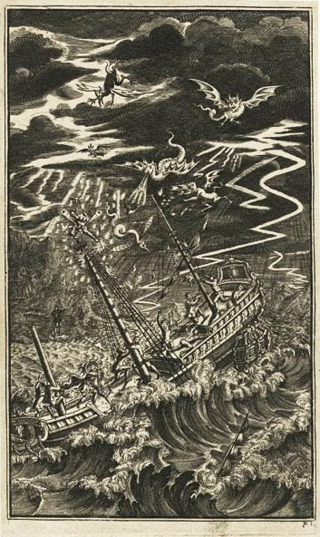

(To Trinculo)Tell not me1; when the butt2 is out, wewill drink water3; not a drop before: therefore bear up, andboard 'em4. Servant-monster, drink to me.
Trinculo
Servant-monster! the folly of this island! Theysay there's but five5 upon this isle: we are three of them;if th' other two be brained like us6, the state totters.
Stephano
Drink, servant-monster, when I bid thee: thyeyes are almost set in thy head7.
Trinculo
Where should they be set else? he were a bravemonster indeed, if they were set in his tail8.
Stephano
My man-monster hath drown'd his tongue insack: for my part, the sea cannot drown me; I swam, ereI could recover the shore, five and thirty leagues9 off andon. By this light, thou shalt be my lieutenant, monster, ormy standard10.
Trinculo
Your lieutenant, if you list; he's no standard11.
Stephano
We'll not run12, Monsieur Monster.
Trinculo
Nor go13 neither; but you'll lie like dogs14 and yetsay nothing neither.
Stephano
Moon-calf, speak once in thy life, if thou beest agood moon-calf.
Caliban
How does thy honour? Let me lick thy shoe. I'llnot serve him15; he's not valiant.
Trinculo
Thou liest, most ignorant monster: I am in case16to justle17 a constable. Why, thou deboshed fish thou, wasthere ever man a coward that hath drunk so much sackas I to-day? Wilt thou tell a monstrous lie, being but halfa fish and half a monster?
Caliban
Lo, how he mocks me! Wilt thou let him, my lord?
Trinculo
'Lord' quoth he! What a monster should be sucha natural18!
Caliban
Lo, lo, again! Bite him to death, I prithee.
Stephano
Trinculo, keep a good tongue in your head19: if youprove a mutineer—the next tree20! The poor monster's mysubject and he shall not suffer ingidnity.
Caliban
I thank my noble lord. Wilt thou be pleased tohearken once again to the suit I made to thee?
Stephano
Marry, will I kneel and repeat it; I will stand,and so shall Trinculo.Enter Ariel, invisible21
Caliban
As I told thee before, I am subject to a tyrant22, asorcerer, that by his cunning hath cheated me of theisland.
Ariel
Thou liest.
Caliban
Thou liest23, thou jesting monkey, thou!I would my valiant master24 would destroy thee! I do notlie.
Stephano
Trinculo, if you trouble him any more in's tale25,by this hand, I will supplant some of your teeth26.
Trinculo
Why, I said nothing.
Stephano
Mum, then, and no more. Proceed.
Caliban
I say, by sorcery he got this isle27;From me he got it. If thy greatness willRevenge it on him—for I know thou darest,But this one thing dare not—
Stephano
That's most certain.
Caliban
Thou shalt be lord of it and I'll serve thee.
Stephano
How now shall this be compassed28? Canst thoubring me to the party?
Caliban
Yea, yeah, my lord. I'll yield him thee asleep,Where thou mayst knock a nail into his head.
Ariel
Thou liest; thou canst not.
Caliban
What a pied29 ninny's this! Thou scurvy patch30!I do beseech thy greatness, give him blowsAnd take his bottle from him. When that's gonehe shall drink nought but brine, for I'll not show himWhere the quick freshes are31.
Stephano
Trinculo, run into no further danger. Interruptthe monster one more word further, and, by this hand, I'll turnmy mercy out o' doors and make a stockfish32 of thee.
Trinculo
Why, what did I? I did nothing. I'll go farther off.
Stephano
Didst thou not say he lied?
Ariel
Thou liest.
Stephano
Do I so. Take thou that! (Beats Trinculo) As youlike this, give me the lie33 another time.
Trinculo
I did not give the lie. Out o' your wits and bearingtoo? A pox o' your bottle! This can sack and drinking do.A murrain34 on your monster, and the devil take yourfingers!
Caliban
Ha, ha, ha!
Stephano
Now, forward with your tale.Prithee, stand farther off35.
Caliban
Beat him enough. After a little timeI'll beat him too.
Stephano
Stand farther. Come, proceed.
Caliban
Why, as I told thee, 'tis a custom with him,I' th' afternoon to sleep. There thou mayst brain him36,Having first seized his books, or with a logBatter his skull, or paunch him37 with a stake,Or cut his weasand38 with thy knife. RememberFirst to possess his books; for without themHe's but a sot39, as I am, nor hath notOne spirit to command—they all do hate himas rootedly as I. Burn but his books.He has brave utensils40, for so he calls them,Which when he has a house, he'll deck withal.And that most deeply to consider isThe beauty of his daughter. He himselfCalls her a nonpareil. I never saw a womanBut only Sycorax, my dam, and she41;But she as far surpasseth SycoraxAs great'st does least.
Stephano
Is it so brave42 a lass?
Caliban
Ay, lord. She will become thy bed43, I warrant.And bring thee forth brave brood.
Stephano
Monster, I will kill this man. His daughter and Iwill be king and queen—save our graces!44— and Trinculoand thyself shall be viceroys. Dost thou like the plot,Trinculo?
Trinculo
Excellent.
Stephano
Give me thy hand. I am sorry I beat the, but,while thou liv'st, keep a good tongue in thy head.
Caliban
Within this half hour will he be asleep.Wilt thou destroy him then?
Stephano
Ay, on mine honour.
Ariel
This will I tell my master.
Caliban
Thou makest me merry. I am full of pleasure;Let us be jocund. Will you troll45 the catch46You taught me but whilere47?
Stephano
At thy request, monster, I will do reason48, any reason.Come on, Trinculo, let us sing.SingsFlout 'em and cout 'emAnd scout 'em and flout 'emThought is free.
Caliban
That's not the tune.Ariel plays the tune on a tabor and pipe49
Stephano
What is this same?
Trinculo
This is the tune of our catch, played by the pictureof Nobody50.
Stephano
If thou beest a man, show thyself in they likeness.If thou beest a devil, take't as thou list51.
Trinculo
O, forgive my sins52!
Stephano
He that dies pays all debts. I defy thee. Mercyupon us!
Caliban
Art thou afeard?
Stephano
No, monster, not I.
Caliban
Be not afeard. The isle is full of noises,Sounds and sweet airs, that give delight and hurt not.Sometimes a thousand twangling instrumentsWill hum about mine ears, and sometime voicesThat, if I then had waked after long sleep,Will make me sleep again. And then, in dreaming,The clouds methought would open and show richesReady to drop upon me that, when I waked,I cried to dream again.
Stephano
This will prove a brave kingdom to me, where Ishall have my music for nothing.
Caliban
When Prospero is destroyed.
Stephano
That shall be by and by. I remember the story.
Trinculo
The sound is going away. Let's follow it, and after53do our work.
Stephano
Lead, monster, we'll follow. I would I could seethis taborer; he lays it on.
Trinculo
Wilt come? I'll follow, Stephano.
Exeunt.

An 18th-century woodcut of a tempest
Glossary and Notes
i.e. Don't tell me not to drink so much.
An archaeic unit of wine, and quite a lot of it. A butt of wine around Shakespeare's time was about 126 gallons (104 imperial gallons). Compare the average US beer keg barrel size of about 15.5 gallons.
i.e. We'll keep drinking wine until run out. Only then will we switch to water.
Bear up and board 'em: A naval phrase meaning to pull up to the ship being pursued and board it forcefully. Here, it means: "drink!"
i.e. five beings on the island.
i.e. Are as unintelligent as we are.
From being so drunk
i.e. Caliban's eyes in his tail rather than his head.
35 leagues is a ridiculously long distance to have claimed to have swum. A league was approximately three nautical miles, making this distance something north of 100 miles.
i.e. Caliban can be Stephano's standard-bearer.
Caliban's "no standard," that is, he's abnormal or freakish; he can't stand up.
i.e. we'll not run away from the enemy.
Walk.
Lie (physically) like dogs, but also lie (tell untruths) like dogs.
Trinculo (is not valiant).
Prepared, but also means drunk.
Jostle, shake.
Monsters are, in general, not natural. How strange that Caliban would be "such a natural", that is, an idiot.
Keep a good tongue in thy head: proverbial.
i.e. Like a hangman, I'll hang you at the next tree.
Ariel, sent by Prospero, stays invisible but audible, able to create havoc in the next parts of the scene.
i.e. Prospero (Caliban being Prospero's slave).
Caliban thinks Trinculo has spoken the preceding line.
i.e. Stephano (Caliban's new, benevolent "master").
"in's": in his.
i.e. How'd you like a mouthful of teeth/knuckle sandwich?
he: Prospero. Here Caliban is referring back to how his mother (Sycorax) was previously the mistress of the isle before her death and Prospero's arrival with Miranda. Caliban sees himself as the rightful heir of the island.
i.e. How will this come about or be accomplished?
Trinculo is likely wearing a jester's costume, which is pied (a multi-colored pattern).
Patch and ninny are both synonyms for fool or idiot.
That is, Trinculo will only have brackish or briny water to drink, because he (Caliban) won't show him where the fresh water is on the island.
Dried cod, a.k.a. stockfish, was typically beaten before cooking to make it more tender.
Give me the lie: Call me a liar.
A pox o', murrain: Plague. Curses.
Perhaps because Caliban is particularly stinky.
Smash in his skull.
Stab him in the belly (paunch).
Windpipe.
Fool.
Magical paraphenalia.
i.e. her, Miranda.
Handsome, splendid.
i.e. She will suit you as a bedfellow.
i.e. God save the King and Queen! (as Stephano and Miranda reign in Stephano's fantasy).
Sing
A song written with three parts, to be sung as a round.
A little while ago.
Anything reasonable.
A small drum that hangs by one's side and pipe played with one hand.
The personification of Nobody: Here Ariel is invisible and is seen by Trinculo as Nobody.
Proverbial: i.e. The devil take it.
Here, Trinculo is frightened that he may have met his maker and is repenting.